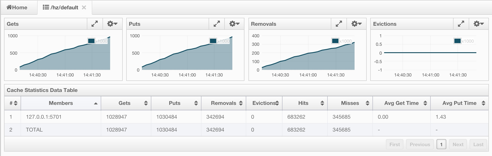
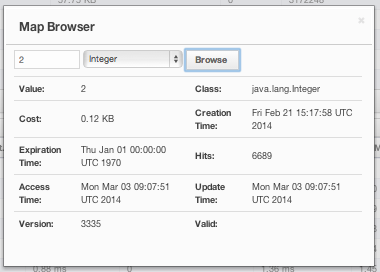
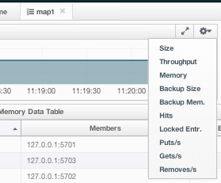
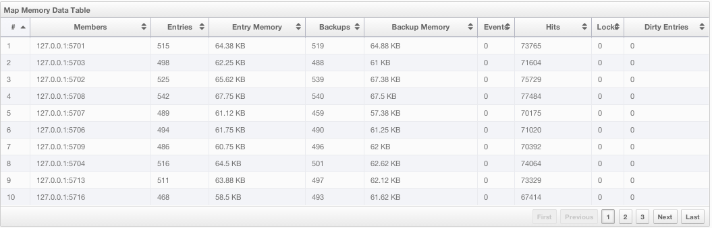
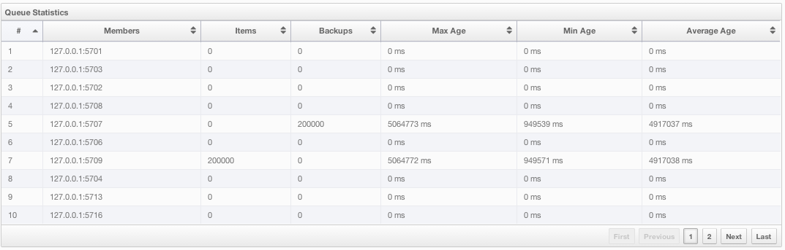
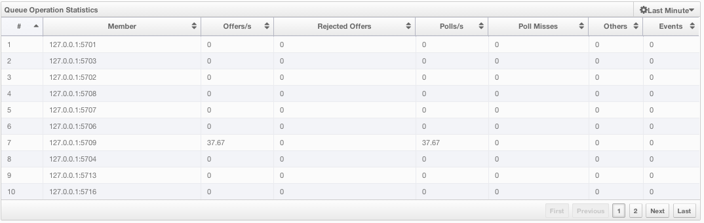
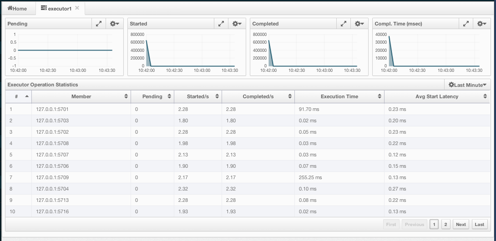
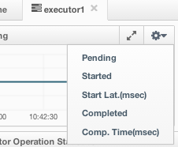
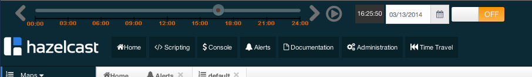

Management Center
Introduction
Hazelcast Management Center enables you to monitor and manage your nodes running Hazelcast. In addition to monitoring overall state of your clusters, you can also analyze and browse your data structures in detail, update map configurations and take thread dump from nodes. With its scripting and console module, you can run scripts (JavaScript, Groovy, etc.) and commands on your nodes.
Installation
There are two options for installing Hazelcast Management Center. You can either deploy mancenter-version.war application into your Java application server/container or start Hazelcast Management Center directly from the command line and then have the Hazelcast nodes communicate with that web application. That means, your Hazelcast nodes should know the URL of mancenter application before they start.
Here are the steps:
- Download the latest Hazelcast ZIP from hazelcast.org. ZIP contains
mancenter-version.warfile. - You can directly start
mancenter-version.warfile from the command line:
java -jar mancenter-*version*.war 8080 mancenter
- The above command will start Hazelcast Management Center on port 8080 with context root 'mancenter' (
http://localhost:8080/mancenter). - Or, you can deploy it to your web server (Tomcat, Jetty, etc.). Let us say it is running at
http://localhost:8080/mancenter. - After above steps are performed, make sure that
http://localhost:8080/mancenteris up. - Configure your Hazelcast nodes by adding the URL of your web application to your
hazelcast.xml. Hazelcast nodes will send their states to this URL.
<management-center enabled="true">http://localhost:8080/mancenter</management-center>
Start your Hazelcast cluster.
Browse to
http://localhost:8080/mancenterand login. Initial login username/password isadmin/admin
Management Center creates a directory with name "mancenter" under your "user/home" directory to save data files. You can change the data directory by setting hazelcast.mancenter.home system property.
Tool Overview
Once the page is loaded after selecting a cluster, tool's home page appears as shown below.

This page provides the fundamental properties of the selected cluster which are explained in Home Page section.
It also has a toolbar on the top and a menu on the left.
Toolbar
Toolbar has the following buttons:
- Home: When pressed, loads the home page shown above. Please see Home Page.
- Scripting: When pressed, loads the page used to write and execute user`s own scripts on the cluster. Please see Scripting.
- Console: When pressed, loads the page used to execute commands on the cluster. Please see Console.
- Alerts: It is used to create alerts by specifying filters. Please see Alerts.
- Documentation: It is used to open the documentation of Management Center in a window inside the tool. Please see Documentation.
- Administration: It is used by the admin users to manage users in the system. Please see Administration.
- Time Travel: It is used to see the cluster's situation at a time in the past. Please see Time Travel.
Cluster Selector: It is used to switch between clusters. When the mouse is moved onto this item, a drop down list of clusters appears.
The user can select any cluster and once selected, the page immediately loads with the selected cluster's information.
- Logout: It is used to close the current user's session.
 NOTE: Some of the above listed toolbar items are not visible to the users who are not admin or have read-only permission. Also, some of the operations explained in the later sections cannot be performed by users with read-only permission. Please see Administration for details.
NOTE: Some of the above listed toolbar items are not visible to the users who are not admin or have read-only permission. Also, some of the operations explained in the later sections cannot be performed by users with read-only permission. Please see Administration for details.
Menu
Home page includes a menu on the left which lists the distributed data structures in the cluster and also all cluster members (nodes), as shown below.
NOTE: Distributed data structures will be shown there when the proxies are created for them.
Menu items can be expanded/collapsed by clicking on them. Below is the list of menu items with the links to their explanations.
Tabbed View
Each time an item from the toolbar or menu is selected, it is added to main view as a tab, as shown below.

In the above example, Home, Scripting, Console, queue1 and map1 windows can be seen as tabs. Windows can be closed using the  icon on each tab (except the Home Page; it cannot be closed).
icon on each tab (except the Home Page; it cannot be closed).
Home Page
This is the first page appearing after logging in. It gives an overview of the cluster connected. Below subsections describe each portion of the page.
CPU Utilization
This part of the page provides information related to load and utilization of CPUs for each node, as shown below.

First column lists the nodes with their IPs and ports. Then, the loads on each CPU for the last 1, 5 and 15 minutes are listed. The last column (Chart) shows the utilization of CPUs graphically. When you move the mouse cursor on a desired graph, you can see the CPU utilization at the time to which cursor corresponds. Graphs under this column shows the CPU utilizations approximately for the last 2 minutes.
Memory Utilization
This part of the page provides information related to memory usages for each node, as shown below.

First column lists the nodes with their IPs and ports. Then, used and free memories out of the total memory reserved for Hazelcast usage are shown, in real-time. Max column lists the maximum memory capacity of each node and Percent column lists the percentage value of used memory out of the maximum memory. The last column (Chart) shows the memory usage of nodes graphically. When you move the mouse cursor on a desired graph, you can see the memory usage at the time to which cursor corresponds. Graphs under this column shows the memory usages approximately for the last 2 minutes.
Memory Distribution
This part of the page graphically provides the cluster wise breakdown of memory, as shown below. Blue area is the memory used by maps, dark yellow area is the memory used by non-Hazelcast entities and green area is the free memory (out of whole cluster`s memory capacity).

In the above example, you can see 0.32% of the total memory is used by Hazelcast maps (it can be seen by moving the mouse cursor on it), 58.75% is used by non-Hazelcast entities and 40.85% of the total memory is free.
Map Memory Distribution
This part is actually the breakdown of the blue area shown in Memory Distribution graph explained above. It provides the percentage values of the memories used by each map, out of the total cluster memory reserved for all Hazelcast maps.
In the above example, you can see 49.55% of the total map memory is used by map1 and 49.55% is used by map2.
Partition Distribution
This pie chart shows what percentage of partitions each node has, as shown below.

You can see each node's partition percentages by moving the mouse cursor on the chart. In the above example, you can see the node "127.0.0.1:5708" has 5.64% of the total partition count (which is 271 by default and configurable, please see Advanced Configuration Properties).
Caches
You can monitor your caches' metrics by clicking the cache name listed on the left panel under Caches menu item. A new tab for monitoring that cache instance is opened on the right, as shown below.

On top of the page, there are four charts to monitor the Gets, Puts, Removals and Evictions in real-time. For all charts' X-axis shows the current system time and a chart can be opened as a separate dialog by clicking on the button placed at top right of each chart.
Under these charts, there is Cache Statistics Data Table. From left to right, this table lists the IP addresses and ports of each node, get, put, removal, eviction, hit and miss count per second in real-time.
You can navigate through the pages using the buttons placed at the bottom right of the table (First, Previous, Next, Last). The order of the listings in each column can be ascended or descended by clicking on column headings.
Maps
Map instances are listed under the Maps menu item on the left. When you click on a map, a new tab for monitoring that map instance is opened on the right, as shown below. In this tab, you can monitor metrics and also re-configure the selected map.

Below subsections explain the portions of this window.
Map Browser
Map Browser is a tool used to retrieve properties of the entries stored in the selected map. It can be opened by clicking on the Map Browser button, located at top right of the window. Once opened, the tool appears as a dialog, as shown below.

Once the key and key's type is specified and Browse button is clicked, key's properties along with its value is listed.
Map Config
By using Map Config tool, you can set selected map's attributes like the backup count, TTL, and eviction policy. It can be opened by clicking on the Map Config button, located at top right of the window. Once opened, the tool appears as a dialog, as shown below.

Change any attribute as required and click Update button to save changes.
Map Monitoring
Besides Map Browser and Map Config tools, this page has many monitoring options explained below. All of these perform real-time monitoring.
On top of the page, there are small charts to monitor the size, throughput, memory usage, backup size, etc. of the selected map in real-time. All charts' X-axis shows the current system time. Other small monitoring charts can be selected using button placed at top right of each chart. When it is clicked, the whole list of monitoring options are listed, as shown below.

When you click on a desired monitoring, the chart is loaded with the selected option. Also, a chart can be opened as a separate dialog by clicking on the button placed at top right of each chart. Below monitoring charts are available:
- Size: Monitors the size of the map. Y-axis is the entry count (should be multiplied by 1000).
- Throughput: Monitors get, put and remove operations performed on the map. Y-axis is the operation count.
- Memory: Monitors the memory usage on the map. Y-axis is the memory count.
- Backups: It is the chart loaded when "Backup Size" is selected. Monitors the size of the backups in the map. Y-axis is the backup entry count (should be multiplied by 1000).
- Backup Memory: It is the chart loaded when "Backup Mem." is selected. Monitors the memory usage of the backups. Y-axis is the memory count.
- Hits: Monitors the hit count of the map.
- Puts/s, Gets/s, Removes/s: These three charts monitor the put, get and remove operations (per second) performed on the selected map.
Under these charts, there are Map Memory and Map Throughput data tables. Map Memory data table provides memory metrics distributed over nodes, as shown below.

From left to right, this table lists the IP address and port, entry counts, memory used by entries, backup entry counts, memory used by backup entries, events, hits, locks and dirty entries (in the cases where MapStore is enabled, these are the entries that are put to/removed from the map but not written to/removed from a database yet) of each node in the map. You can navigate through the pages using the buttons placed at the bottom right of the table (First, Previous, Next, Last). The order of the listings in each column can be ascended or descended by clicking on column headings.
Map Throughput data table provides information about the operations (get, put, remove) performed on each node in the map, as shown below.

From left to right, this table lists the IP address and port of each node, put, get and remove operations on each node, average put, get, remove latencies and maximum put, get, remove latencies on each node.
You can select the period in the combo box placed at top right corner of the window, for which the table data will be shown. Available values are Since Beginning, Last Minute, Last 10 Minutes and Last 1 Hour.
You can navigate through the pages using the buttons placed at the bottom right of the table (First, Previous, Next, Last). The order of the listings in each column can be ascended or descended by clicking on column headings.
Queues
Using the menu item Queues, you can monitor your queues data structure. When you expand this menu item and click on a queue, a new tab for monitoring that queue instance is opened on the right, as shown below.
On top of the page, there are small charts to monitor the size, offers and polls of the selected queue in real-time. All charts' X-axis shows the current system time. And a chart can be opened as a separate dialog by clicking on the button placed at top right of each chart. Below monitoring charts are available:
- Size: Monitors the size of the queue. Y-axis is the entry count (should be multiplied by 1000).
- Offers: Monitors the offers sent to the selected queue. Y-axis is the offer count.
- Polls: Monitors the polls sent to the selected queue. Y-axis is the poll count.
Under these charts, there are Queue Statistics and Queue Operation Statistics tables. Queue Statistics table provides item and backup item counts in the queue and age statistics of items and backup items at each node, as shown below.

From left to right, this table lists the IP address and port, items and backup items on the queue of each node, and maximum, minimum and average age of items in the queue. You can navigate through the pages using the buttons placed at the bottom right of the table (First, Previous, Next, Last). The order of the listings in each column can be ascended or descended by clicking on column headings.
Queue Operations Statistics table provides information about the operations (offers, polls, events) performed on the queues, as shown below.

From left to right, this table lists the IP address and port of each node, and counts of offers, rejected offers, polls, poll misses and events.
You can select the period in the combo box placed at top right corner of the window, for which the table data will be shown. Available values are Since Beginning, Last Minute, Last 10 Minutes and Last 1 Hour.
You can navigate through the pages using the buttons placed at the bottom right of the table (First, Previous, Next, Last). The order of the listings in each column can be ascended or descended by clicking on column headings.
Topics
You can monitor your topics' metrics by clicking the topic name listed on the left panel under Topics menu item. A new tab for monitoring that topic instance is opened on the right, as shown below.
On top of the page, there are two charts to monitor the Publishes and Receives in real-time. They show the published and received message counts of the cluster, nodes of which are subscribed to the selected topic. Both charts' X-axis shows the current system time. and a chart can be opened as a separate dialog by clicking on the button placed at top right of each chart.
Under these charts, there is Topic Operation Statistics table. From left to right, this table lists the IP addresses and ports of each node, and counts of message published and receives per second in real-time. You can select the period in the combo box placed at top right corner of the table, for which the table data will be shown. Available values are Since Beginning, Last Minute, Last 10 Minutes and Last 1 Hour.
You can navigate through the pages using the buttons placed at the bottom right of the table (First, Previous, Next, Last). The order of the listings in each column can be ascended or descended by clicking on column headings.
MultiMaps
As you know, MultiMap is a specialized map where you can associate a key with multiple values. This monitoring option is similar to the Maps one. Same monitoring charts and data tables are used to monitor MultiMaps. Differences are; not being able to browse the MultiMaps and to re-configure it. Please see Maps.
Executors
Executor instances are listed under the Executors menu item on the left. When you click on a executor, a new tab for monitoring that executor instance is opened on the right, as shown below.

On top of the page, there are small charts to monitor the pending, started, completed, etc. executors in real-time. All charts' X-axis shows the current system time. Other small monitoring charts can be selected using button placed at top right of each chart. When it is clicked, the whole list of monitoring options are listed, as shown below.

When you click on a desired monitoring, the chart is loaded with the selected option. Also, a chart can be opened as a separate dialog by clicking on the button placed at top right of each chart. Below monitoring charts are available:
- Pending: Monitors the pending executors. Y-axis is the executor count.
- Started: Monitors the started executors. Y-axis is the executor count.
- Start Lat. (msec): Shows the latency when executors are started. Y-axis is the duration in milliseconds.
- Completed: Monitors the completed executors. Y-axis is the executor count.
- Comp. Time (msec): Shows the completion period of executors. Y-axis is the duration in milliseconds.
Under these charts, there is Executor Operation Statistics table, as shown below.

From left to right, this table lists the IP address and port of nodes, counts of pending, started and completed executors per second, execution time and average start latency of executors on each node. You can navigate through the pages using the buttons placed at the bottom right of the table (First, Previous, Next, Last). The order of the listings in each column can be ascended or descended by clicking on column headings.
Members
This menu item is used to monitor each cluster member (node) and also perform operations like running garbage collection (GC) and taking a thread dump. Once a member is selected from the menu, a new tab for monitoring that member is opened on the right, as shown below.

CPU Utilization chart shows the CPU usage on the selected member in percentage. Memory Utilization chart shows the memory usage on the selected member with three different metrics (maximum, used and total memory). Both of these charts can be opened as separate windows using the button placed at top right of each chart, a more clearer view can be obtained by this way.
The window titled with Partitions shows which partitions are assigned to the selected member. Runtime is a dynamically updated window tab showing the processor number, start and up times, maximum, total and free memory sizes of the selected member. Next to this, there is Properties tab showing the system properties. Member Configuration window shows the connected Hazelcast cluster's XML configuration.
Besides the aforementioned monitoring charts and windows, there are also operations you can perform on the selected member through this page. You can see operation buttons located at top right of the page, explained below:
- Run GC: When pressed, garbage collection is executed on the selected member. A notification stating that the GC execution was successful will be shown.
- Thread Dump: When pressed, thread dump of the selected member is taken and shown as a separate dialog to the user.
- Shutdown Node: It is used to shutdown the selected member.
Scripting
Scripting feature of this tool is used to execute codes on the cluster. You can open this feature as a tab by selecting Scripting located at the toolbar on top. Once selected, it is opened as shown below.
In this window, Scripting part is the actual coding editor. You can select the members on which the code will be executed from the Members list shown at the right side of the window. Below the members list there is a combo box enabling you to select a scripting language. Currently, Javascript, Ruby, Groovy and Python languages are supported. After you write your script and press Execute button, you can see the execution result in the Result part of the window.
There are also Save and Delete buttons on top right of the scripting editor. You can save your scripts by pressing the Save button after you type a name for the script into the field next to this button. The scripts you saved are listed in the Saved Scripts part of the window, located at the bottom right of the page. You can simply click on a saved script from this list to execute or edit it. And, if you want to remove a script that you wrote and save before, just select it from this list and press Delete button.
In the scripting engine you have a HazelcastInstance bonded to a variable named hazelcast. You can invoke any method that HazelcastInstance has via the hazelcast variable. You can see sample usage for JavaScript below.
var name = hazelcast.getName();
var node = hazelcast.getCluster().getLocalMember();
var employees = hazelcast.getMap("employees");
employees.put("1","John Doe");
employees.get("1"); // will return "John Doe"
Console
Management Center has also a console feature that enables you to execute commands on the cluster. For example, you can perform "put"s and "get"s on a map, after you set the namespace with the command ns <name of your map>. Same is valid for queues, topics, etc. To execute your command, just type it into the field below the console and press Enter. You can type help to see all commands that can be used.
Console window can be opened by clicking on the Console button located at the toolbar. A sample view with some commands executed can ben seen below.

Alerts
Alerts feature of this tool is used to receive alerts by creating filters. In these filters, criteria can be specified for cluster, nodes or data structures. When the specified criteria are met for a filter, related alert is shown as a pop-up message on top right of the page.
Once the Alerts button located at the toolbar is clicked, the page shown below appears.
Creating Filters for Cluster
Select Cluster Alerts check box to create a cluster wise filter. Once selected, next screen asks the items for which alerts will be created, as shown below.

Select the desired items and click the Next button. On the next page shown below, specify the frequency of checks in hour and min fields, give a name for the filter, select whether notification e-mails will be sent (to no one, only admin or to all users) and select whether the alert data will be written to the disk (if checked, you can see the alert log at the directory /users/

Click on the Save button; your filter will be saved and put into the Filters part of the page, as shown below.
You can edit the filter by clicking on the  icon and delete it by clicking on the icon.
icon and delete it by clicking on the icon.
Creating Filters for Cluster Members
Select Member Alerts check box to create filters for some or all members in the cluster. Once selected, next screen asks for which members the alert will be created. Select as desired and click on the Next button. On the next page shown below, specify the criteria.

Alerts can be created when:
- free memory on the selected nodes is less than the specified number
- used heap memory is larger than the specified number
- number of active threads are less than the specified count
- number of daemon threads are larger than the specified count
When two or more criteria is specified they will be bound with the logical operator AND.
On the next page, give a name for the filter, select whether notification e-mails will be sent (to no one, only admin or to all users) and select whether the alert data will be written to the disk (if checked, you can see the alert log at the directory /users/
Click on the Save button; your filter will be saved and put into the Filters part of the page. You can edit the filter by clicking on the icon and delete it by clicking on the icon.
Creating Filters for Data Types
Select Data Type Alerts check box to create filters for data structures. Next screen asks for which data structure (maps, queues, multimaps, executors) the alert will be created. Once a structure is selected, next screen immediately loads and wants you to select the data structure instances (i.e. if you selected Maps, it will list all the maps defined in the cluster, you can select only one map or more). Select as desired, click on the Next button and select the members on which the selected data structure instances run.
Next screen, as shown below, is the one where the criteria for the selected data structure are specified.

As it can be seen, you will select an item from the left combo box, select the operator in the middle one, specify a value in the input field and click on the Add button. You can create more than one criteria in this page, and those will be bound by the logical operator AND.
After the criteria are specified and Next button clicked, give a name for the filter, select whether notification e-mails will be sent (to no one, only admin or to all users) and select whether the alert data will be written to the disk (if checked, you can see the alert log at the directory /users/
Click on the Save button; your filter will be saved and put into the Filters part of the page. You can edit the filter by clicking on the icon and delete it by clicking on the icon.
Administration
NOTE: This toolbar item is available only to admin users, i.e. the users who initially have **admin** as their both usernames and passwords.
Admin user can add, edit, remove users and specify the permissions for the users of Management Center. To perform these operations, click on Administration button located at the toolbar. The page shown below appears.
To add a user to the system, specify the username, e-mail and password in the Add/Edit User part of the page. If the user to be added will have administrator privileges, select isAdmin checkbox. Permissions checkboxes have two values:
- Read Only: If this permission is given to the user, only Home, Documentation and Time Travel items will be visible at the toolbar at that user's session. Also, the users with this permission cannot update a map configuration, run a garbage collection and take a thread dump on a node, and shutdown a node (please see Members section).
- Read/Write: If this permission is given to the user, Home, Scripting, Console, Documentation and Time Travel items will be visible. The users with this permission can update a map configuration and perform operations on the nodes.
After all fields are entered/selected, click Save button to create the user. You will see the newly created user's username on the left side, in the Users part of the page.
To edit or delete a user, select a username listed in the Users. Selected user's information will appear on the right side of the page. To update the user information, change the fields as desired and click Save button. To delete the user from the system, click Delete button.
Time Travel
Time Travel is used to check the status of the cluster at a time in the past. Once this item is selected on the toolbar, a small window appears on top of the page, as shown below.

To see the cluster status in a past time, Time Travel should be enabled first. Click on the area where it says OFF (on the right of Time Travel window). It will turn to ON after it asks whether to enable the Time Travel with a dialog (just click on Enable).
Once it is ON, it means that the status of your cluster is started to be stored on your disk, as long as your web server is alive.
You can go back in time using the slider and/or calendar and check your cluster's situation at the selected time. All data structures and members can be monitored as if you are using the management center normally (charts and data tables for each data structure and members). Using the arrow buttons placed at both sides of the slider, you can go back or further with steps of 5 seconds. Naturally, it will show the status if Time Travel has been ON at the selected time in past. Otherwise, all charts and tables will be shown as empty.
The historical data collected with Time Travel feature are stored in a file database on the disk. These files can be found on the directory specified by hazelcast.mancenter.home (by default mancenter3 directory in user home folder.)
Documentation
To see the documentation, click on the Documentation button located at the toolbar. Management Center manual will appear as a tab.
Suggested Heap Size
For 2 Nodes
| Mancenter Heap Size | # of Maps | # of Queues | # of Topics |
|---|---|---|---|
| 256m | 3k | 1k | 1k |
| 1024m | 10k | 1k | 1k |
For 10 Nodes
| Mancenter Heap Size | # of Maps | # of Queues | # of Topics |
|---|---|---|---|
| 256m | 50 | 30 | 30 |
| 1024m | 2k | 1k | 1k |
For 20 Nodes
| Mancenter Heap Size | # of Maps | # of Queues | # of Topics |
|---|---|---|---|
| 256m* | NA | NA | NA |
| 1024m | 1k | 1k | 1k |
* With 256m heap, management center is unable to collect statistics.